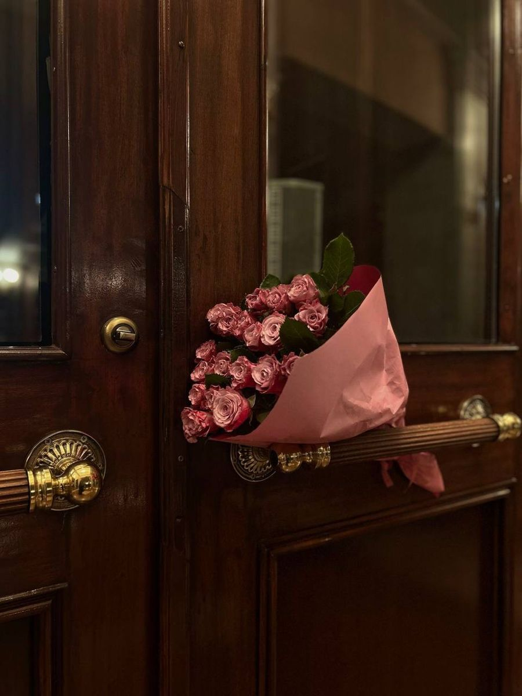
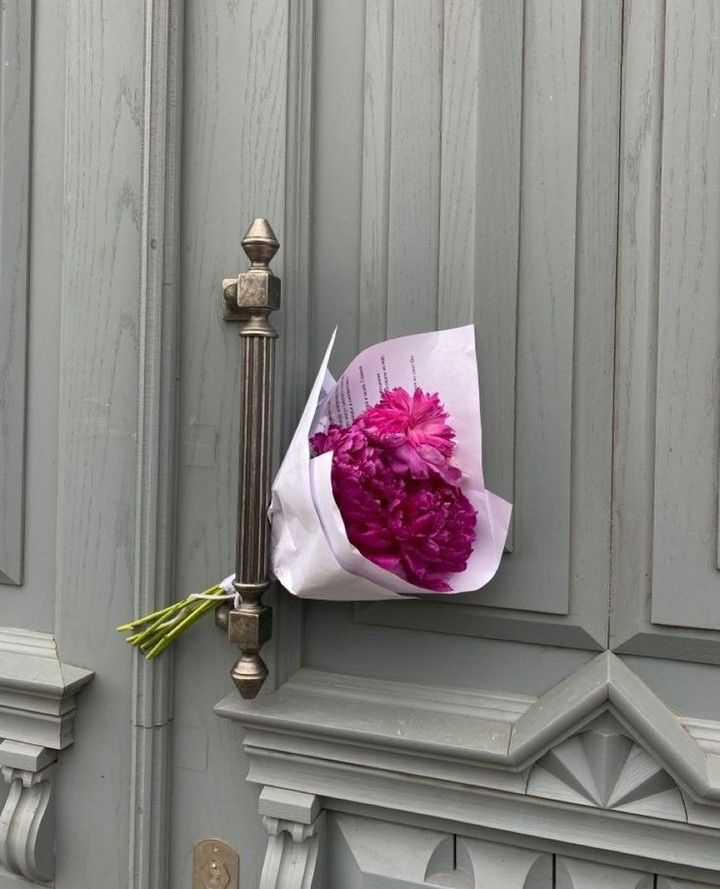
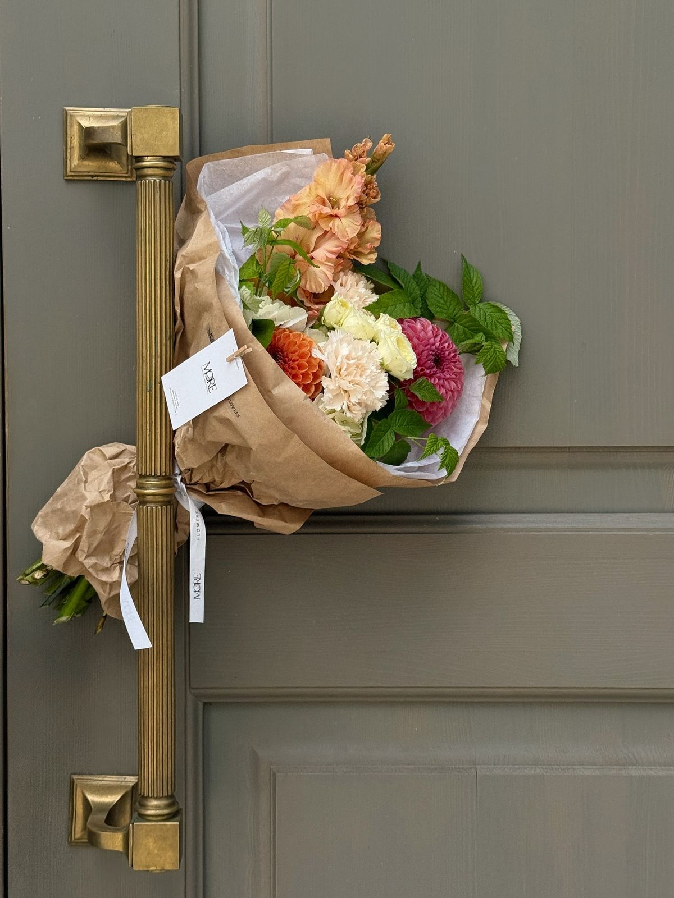

Romantic gestures with flowers aren't about grand spending — they're about timing, specificity, and the unmistakable signal they send: I was thinking about you. Here are seven flower gestures that create real, lasting emotional impact.
1. The No-Occasion Delivery
Counterintuitively, flowers delivered on a random Tuesday — no birthday, no anniversary, no Valentine's Day — often create more emotional impact than flowers delivered on an expected occasion. The lack of obligation is precisely what makes it powerful. It says: I thought of you today, for no reason other than that I wanted to.
Keep it simple. A small hand-tied posy of her favourite flowers. A short note that says exactly one specific thing about why you're thinking of her. Schedule it through our occasion reminder system for a date that has no significance at all. That insignificance is the point.
Expected gestures meet expectations. Unexpected gestures exceed them. The most romantic flower delivery is the one she didn't see coming on a day she least expected it.
2. The Petal Trail at Home
This one requires a key and a sense of theatre. While she's out, scatter rose petals from the front door to a specific destination — the dining table you've set for dinner, the bath you've drawn, the balcony where you've set out candles. The journey matters as much as the destination.
Use loose petals from a separate bunch — never strip the petals from her main bouquet, which should be arranged and waiting. White and blush pink petals photograph beautifully if she wants to capture the moment. Red petals against white tiles or light wooden floors are visually stunning.

3. One Flower, Every Day for a Week
Seven days, seven stems, seven notes. One single rose delivered each morning with a brief handwritten message — a memory, a reason you love her, a single word that means something only to the two of you. By the seventh day she has a full bouquet assembled, and a collection of seven notes she will keep.
This gesture requires more sustained attention than a single large delivery, which is precisely why it lands harder. It says: I was thinking about you every morning this week. Schedule all seven deliveries in advance through our platform — early morning delivery available daily.
Romance is not a single grand moment. It's the accumulation of small, specific, repeated acts of attention. Flowers are a perfect vehicle for exactly that.
— Priya Sharma, Rose & Stem Senior Florist
4. The Workplace Delivery
Flowers delivered to her workplace carry a particular kind of charge — they're public. Her colleagues will see them. She'll be asked about them. She'll have to tell the story all afternoon. For many people, this public acknowledgement of being loved and thought of is deeply moving in a way a private delivery cannot replicate.
A few considerations: make sure she's comfortable with workplace attention. Keep the arrangement elegant but not overwhelming — a beautifully wrapped hand-tied bunch rather than an enormous arrangement she can't carry home. Include a note on the outside addressed to her by name so it arrives correctly even if you're uncertain of the exact desk location.


5. The Specific Apology Bouquet
Flowers as an apology are only as powerful as the specificity of the apology note that accompanies them. A generic "I'm sorry" with roses is a gesture. A specific apology that names exactly what you did wrong, acknowledges its impact, and commits to a change — paired with purple hyacinth (the traditional flower of apology) or white tulips — is meaningful. The flowers amplify the sincerity of the words. They don't replace them.
Writing the Apology Note
Name what you did. Acknowledge how it felt for her. Don't explain or justify. State what you'll do differently. End with something true and specific about her. Four sentences. No more. Specificity is everything.
6. The Annual Anniversary Ritual
Create a ritual: every year on your anniversary, the same flower she carried on your wedding day, or the first flower you ever gave her, arrives at her door. If you can't remember the first flower, ask her — she almost certainly remembers.
The repetition is the point. After three or four years, she begins to anticipate it. After ten years, it has become a private language between you — a flower that means "us, still." Set a permanent annual reminder with Rose & Stem and we'll ensure it never lapses.
7. The Memory Bouquet
This is the most personal and most powerful gesture on this list. Build a bouquet around specific memories: the flowers from the city where you got engaged. The bloom she mentioned once in passing three years ago. The colour she wore on the night you first danced. The flower she planted in her childhood home and still talks about.
This requires memory and attention — which is exactly the point. Include a card that explains why each flower was chosen. This transforms a beautiful bouquet into a love letter made of petals.
None of these gestures requires a special occasion. All of them require genuine attention and care. That is, ultimately, what flowers have always been — a physical, living, fragrant expression of the fact that you were paying close enough attention to know what she loves.


Comments (4)
I tried the daily single stem idea for my wife's birthday week and it completely changed the dynamic. She texted me after the third day saying it was the most romantic thing I'd ever done. The notes made it — be specific, everyone.
Vikram, this made my day to read! The notes are always the secret ingredient — the flowers open the moment, the words make it last. Glad it landed so well. 🌹
The memory bouquet idea brought tears to my eyes. My husband actually did something similar for our 10th anniversary last year — he remembered every significant flower from our journey together. I still have the card framed.
The no-occasion delivery worked better than anything I've done for Valentine's Day or her birthday. She genuinely couldn't believe I'd thought of her on a random Thursday. Lesson learned — stop waiting for occasions.
Leave a Comment
Required fields are marked *